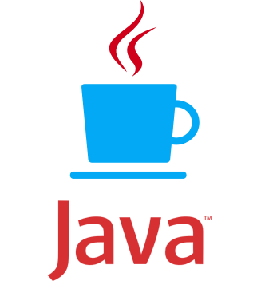

Epicodus Track Suggester
Take this quick questionaire to discover which Epicodus track you should take!
Hey ! Based off the answers you have provided, we recommend that you look into the following track(s):
Ruby/Rails Track!

Ruby is a favorite language of developers building interactive web applications. If an app involves users creating accounts, entering information, and interacting with dynamic content, there's a good chance it is built with Ruby. Ruby became popular because the Rails framework, which is written with Ruby, simplified many of the common tasks associated with building web applications. It's most popular with startups and smaller companies who are looking to build their product quickly.
Though each language has its niche, there is plenty of crossover. For example, Rails' popularity inspired copycats in just about every language, and so you'll see interactive web applications written in C#, Java, and PHP, with Rails-like frameworks including .NET MVC, Spring, and Laravel. Even at one company, you might find them using PHP for their marketing site, Ruby for their web application, and Java for their back-end processing.
PHP/Drupal Track!

PHP is most used in content-heavy websites with relatively little user interaction. The most popular content management systems - Wordpress, Drupal, and Joomla - are all written in PHP, and everything from local restaurants' websites up through large complex government deployments are built with these tools. If you're keen to work for an agency that builds websites for clients, or if you like the idea of building out sites for brands, businesses, and organizations, PHP is a great direction to go.
CSS/Design Track!

Cascading Style Sheets (CSS) is a style sheet language used for describing the presentation of a document written in a markup language. Although most often used to set the visual style of web pages and user interfaces written in HTML and XHTML, the language can be applied to any XML document, including plain XML, SVG and XUL, and is applicable to rendering in speech, or on other media. Along with HTML and JavaScript, CSS is a cornerstone technology used by most websites to create visually engaging webpages, user interfaces for web applications, and user interfaces for many mobile applications.
Java/Android Track!
Java is a favorite of enterprise companies, but its appeal is broader as well: it's one of the most popular of all programming languages, and it's used in everything from for high-performance processing to building Android user interfaces. Because Java has been very popular for a very long time and is used in so many applications, it is also a very high-demand language. If you're interested in working for an enterprise-level company, as an Android developer, or in high-performance applications, Java could be a good language to learn.